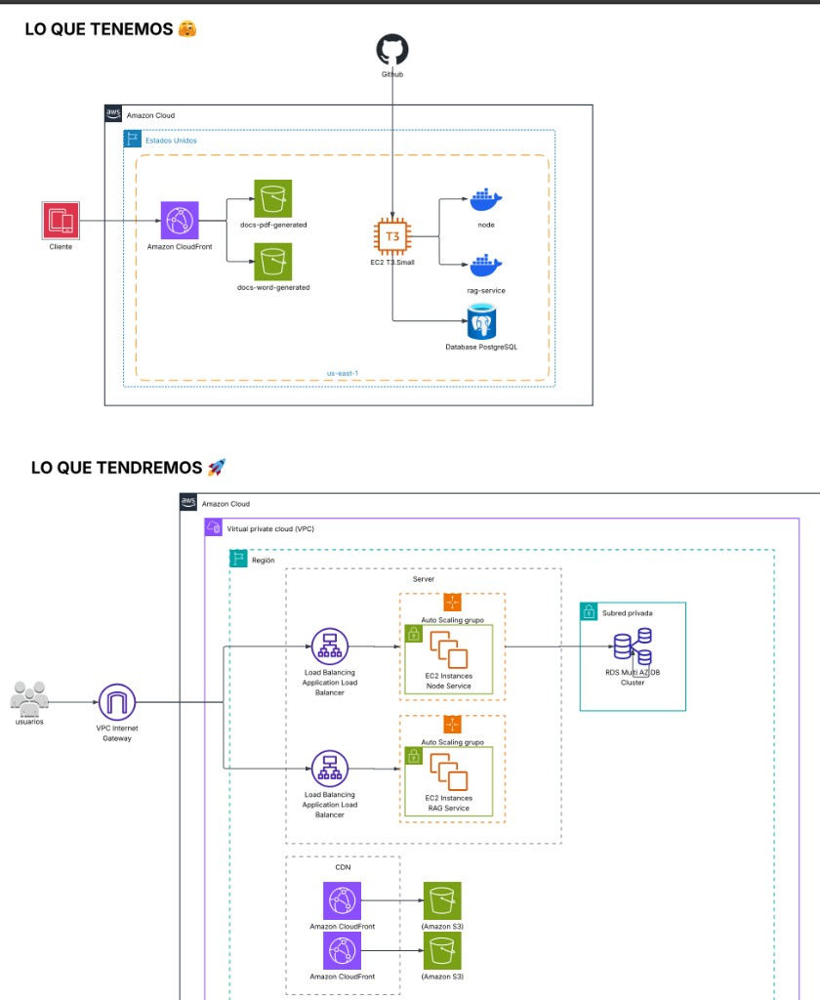

1. Resumen ejecutivo
Docente Pro es una plataforma SaaS para docentes peruanos de educación básica. Utiliza inteligencia artificial para generar sesiones de aprendizaje, unidades curriculares, evaluaciones y recursos didácticos alineados al Currículo Nacional de Educación Básica (CNEB).
Los docentes invierten 8–15 horas semanales en planificación. Docente Pro reduce ese tiempo a minutos, manteniendo calidad pedagógica y cumplimiento normativo MINEDU.
2. Problema y oportunidad
- Más de 350.000 docentes en educación básica regular en Perú planifican por competencias.
- Herramientas genéricas (Word, IA sin contexto) no generan documentos alineados al CNEB.
- Docente Pro combina IA especializada + plantillas oficiales + PDF profesional.
3. Propuesta de valor
| Para el docente | Beneficio |
|---|---|
| Ahorro de tiempo | Sesiones completas en minutos vs. horas manuales |
| Cumplimiento normativo | Alineado al CNEB, competencias y capacidades |
| Documentos listos | PDF profesional para entregar o imprimir |
| Recursos visuales | Gráficos educativos integrados en sesiones |
| Evaluación | Rúbricas coherentes con cada sesión |
4. Producto — Módulos principales
Sesiones de aprendizaje
Generación IA de sesiones con secuencia didáctica (Inicio, Desarrollo, Cierre), propósitos, competencias y reflexiones. Interfaces especializadas por área curricular.
Unidades de aprendizaje
Unidades semanales vinculadas a problemáticas, estándares y sesiones complementarias (Premium).
Evaluaciones y rúbricas
Instrumentos de evaluación automáticos alineados a criterios de la sesión.
Gráficos educativos y fichas
Recursos visuales y fichas de aplicación exportables a PDF.
5. Modelo de negocio
| Plan | Precio | Público |
|---|---|---|
| Personal Primaria | S/ 20 / mes | Docente de primaria |
| Personal Secundaria | S/ 25 / mes | Docente de secundaria |
| Equipo | S/ 30 / mes | Docente + 1 colaborador |
MRR actual estimado: S/ 550 – 625 / mes · Estacionalidad alineada al calendario escolar peruano.
6. Arquitectura técnica
Sistema de microservicios desacoplados: un frontend SPA, un backend orquestador en Node.js y un motor de IA en Python (RAG) potenciado por Google Gemini. Desplegado en AWS con contenedores Docker y diseñado para escalar horizontalmente.
Frontend (SPA)
- React 18 + TypeScript
- Vite · Tailwind · Radix UI
- React Query · Zustand
- Exportación PDF / Word
Backend — Node.js
- Express + TypeScript
- Prisma ORM + PostgreSQL
- Orquestador de IA (gateway)
- +20 grupos de endpoints
IA — Python RAG + Gemini
- FastAPI (microservicio)
- Google Gemini 2.5 Pro / Flash
- LangChain + FAISS (vectorial)
- Pydantic — salida validada
Seguridad
- Auth0 — OAuth 2.0 + JWT
- HTTPS end-to-end
- Control free / premium / admin
- Auditoría cyber (roadmap)
Pagos & tiempo real
- Mercado Pago + webhooks
- Yape / WhatsApp (manual)
- Socket.io — tiempo real
- Activación premium instantánea
Cloud — AWS
- EC2 + Docker (actual)
- S3 + CloudFront (CDN)
- ALB + Auto Scaling (objetivo)
- RDS Multi-AZ (objetivo)
Base de conocimiento (RAG / MINEDU)
El diferencial técnico: el motor de IA no responde "de memoria". Recupera contenido curricular oficial e indexado, y lo usa como contexto para generar planificaciones alineadas a la normativa peruana.
Flujo de generación con IA
Infraestructura AWS — actual y escalable
Hoy operamos una implementación funcional en AWS con CI/CD automatizado. La arquitectura objetivo está diseñada para escalar con balanceadores de carga, Auto Scaling y base de datos en alta disponibilidad.

7. Anatomía de una Sesión de Aprendizaje
Cada sesión es un documento estructurado que cumple las directrices del MINEDU. El motor genera y valida automáticamente:
- Datos generales · Propósito de aprendizaje (competencia, capacidades, desempeños, estándar)
- Propósito de la sesión (qué, cómo, para qué) · Criterios de evaluación y evidencia
- Enfoques transversales (máx. 2) con valores y actitudes observables
- Preparación: recursos y materiales de costo cero (realidad de la escuela pública)
Secuencia didáctica — 3 momentos
INICIO
Problematización, motivación, saberes previos y comunicación del propósito.
DESARROLLO
Gestión y acompañamiento, procesos pedagógicos específicos por área.
CIERRE
Evaluación, metacognición y reflexión del aprendizaje.
Guardrails automáticos: una sola competencia por sesión, títulos normalizados al formato MINEDU, eliminación de contenido alucinado, validación de gráficos e instrumento de evaluación (lista de cotejo) coherente con los criterios.
8. Anatomía de una Unidad de Aprendizaje
Una unidad articula varias áreas durante semanas en torno a una problemática. Se genera mediante un flujo secuencial de 8 pasos, donde cada paso acumula el contexto de los anteriores y alterna modelos Gemini Pro/Flash según complejidad:
- Situación significativa — contexto problematizador real del aula.
- Evidencias — propósito, producto integrador e instrumento de evaluación.
- Propósitos de aprendizaje — competencias, capacidades, estándares, criterios y actividades por área (+ transversales).
- Áreas complementarias — Tutoría, Plan Lector y otras vinculadas a la competencia.
- Enfoques transversales — valores y actitudes observables.
- Secuencia de actividades — planificador semanal hora por hora, día por día, por área.
- Materiales y recursos — coherentes con la secuencia.
- Reflexiones — preguntas de autoevaluación docente.
El backend Node orquesta los 8 pasos en orden, persiste el resultado consolidado y el frontend lo renderiza en tablas con el formato oficial, listo para exportar a PDF o Word.
9. Ventaja competitiva
- Especialización mercado peruano + CNEB con RAG sobre documentos MINEDU (no es ChatGPT genérico).
- Documentos listos para el aula, no solo texto.
- Arquitectura de microservicios extensible por áreas curriculares.
- Equipo con dominio educativo + desarrollo.
10. Proyección financiera
Proyección conservadora con ticket promedio de S/ 22.5/mes por usuario premium. Crecimiento gradual alineado al calendario escolar peruano (picos en marzo y agosto–noviembre).
| Periodo | Premium | Ingresos (MRR) | Gastos/mes | Resultado/mes |
|---|---|---|---|---|
| Jun 2026 (actual) Base actual · 25 premium activos |
25 | S/ 563 | S/ 5,900 | −S/ 5,337 |
| Sep 2026 Inicio año escolar · conversión registrados |
75 | S/ 1,688 | S/ 6,650 | −S/ 4,962 |
| Dic 2026 Vacaciones · foco retención y producto |
170 | S/ 3,825 | S/ 6,550 | −S/ 2,725 |
| Mar 2027 (9 meses) Meta 9 meses · pico inicio de clases |
500 | S/ 11,250 | S/ 9,500 | S/ 1,750 |
| Jun 2027 Consolidación post-pico |
580 | S/ 13,050 | S/ 9,300 | S/ 3,750 |
| Sep 2027 Segundo impulso del año escolar |
665 | S/ 14,963 | S/ 10,050 | S/ 4,913 |
| Dic 2027 (18 meses) Meta 18 meses · rango 700–800 |
780 | S/ 17,550 | S/ 10,100 | S/ 7,450 |
Desglose de gastos operativos
| Rubro | Meses 1–6 | Meses 7–9 | Meses 10–18 |
|---|---|---|---|
| Nómina fundadores (2 pers.) | S/ 5.000 | S/ 5.500 | S/ 6.000 |
| Infra AWS + APIs Gemini | S/ 400 – 800 | S/ 1.200 – 1.800 | S/ 1.800 – 2.500 |
| Marketing y adquisición | S/ 300 – 900 | S/ 1.500 – 2.200 | S/ 1.200 – 1.600 |
| Herramientas, legal, otros | S/ 200 – 250 | S/ 300 | S/ 350 – 400 |
| Total / mes | S/ 5.900 – 6.950 | S/ 8.500 – 9.800 | S/ 9.350 – 10.500 |
Meses 1–9 financiados con la ronda de S/ 60.000. A partir del mes 9–10 los ingresos recurrentes empiezan a cubrir parte significativa de la operación; al mes 18 el margen operativo mensual estimado supera S/ 6.500.
11. Propuesta de inversión
Ronda actual: S/ 60.000 por 25%
Valoración post-money: S/ 240.000 · Inversor estratégico (capital + ciberseguridad + desarrollo)
- S/ 45.000 — Equipo full time (S/ 2.500 × 2 × 9 meses)
- S/ 8.000 — Mejora UX/UI y conversión
- S/ 3.000 — Desarrollo técnico (ATS, integraciones)
- S/ 4.000 — Infra, marketing y reserva